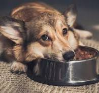
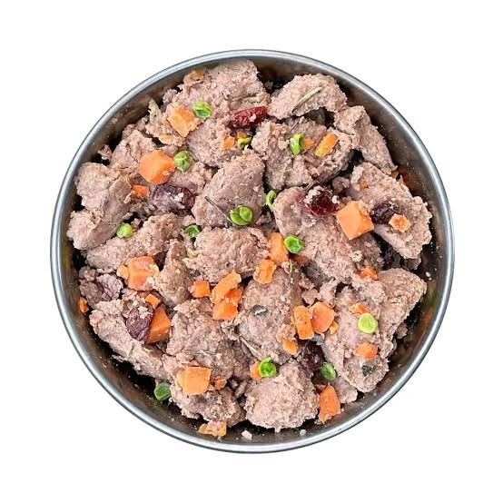
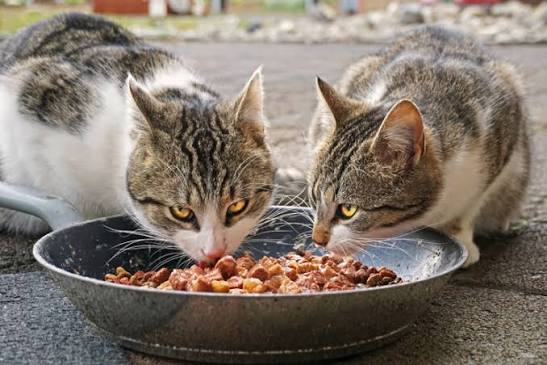
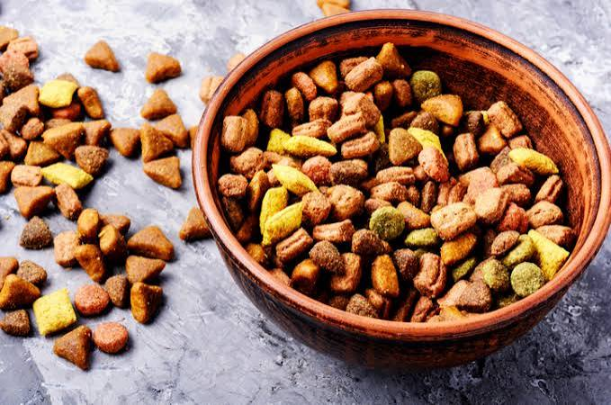
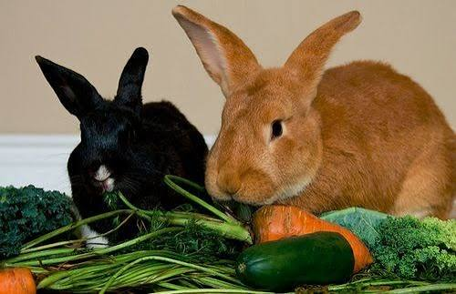
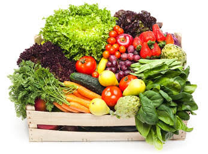
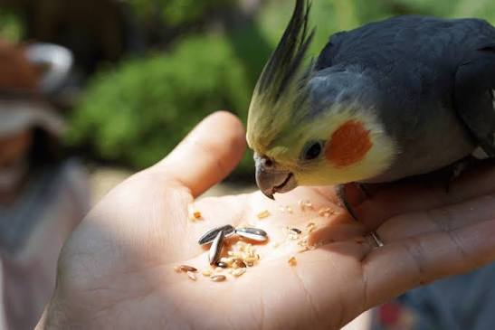
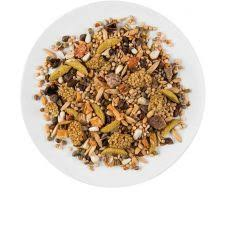

A megfelelő táplálás nagyon fontos a háziállatok egészsége szempontjából. Az állatoknak különböző táplálkozási igényeik vannak, ezért mindig az adott állat számára megfelelő eledelt kell választani.


A kutyáknak olyan táplálékra van szükségük, amely biztosítja számukra a megfelelő mennyiségű energiát és tápanyagot. Fontos, hogy mindig legyen előttük friss ivóvíz.


A macskák húsevő állatok, ezért a táplálékukban fontos szerepet játszanak az állati eredetű tápanyagok. A megfelelő macskaeledel segíthet az egészségük megőrzésében.


A nyúl táplálékának fontos része a széna, amelyet rendszeresen kell biztosítani számára. Emellett megfelelő zöld növényeket és friss vizet is kaphat.


A papagájoknak változatos és megfelelően összeállított étrendre van szükségük. Az étrendjükben szerepelhetnek magvak, zöldségek és bizonyos gyümölcsök is.